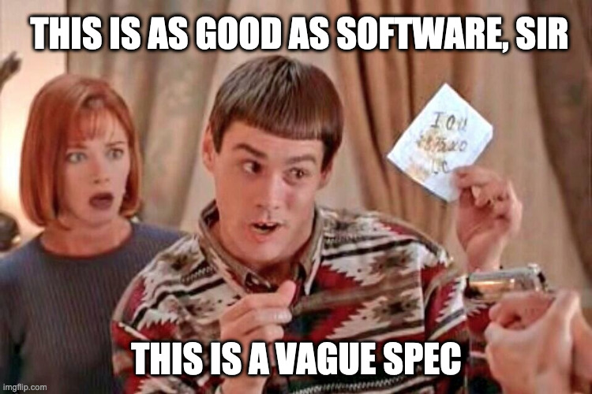

Este post es un pastiche de uno anterior, de la época en que programaba cotidianamente en Node.js. Aquella vez empecé por citar Javascript: The Good Parts acerca de la necesidad de elegir un subconjunto para sacar lo mejor del lenguaje. En los años que siguieron a la publicación del libro de Crockford, JavaScript creció, se convirtió en un lenguaje diseñado "por comité", sumó mucha más funcionalidad (buena y mala) pero no retiró ninguna de las partes "feas", porque romper la compatibilidad es un lujo que JavaScript no puede darse. En fin, el problema original se acentuó: JavaScript es inconsistente y hace falta elegir un subconjunto de sus features para poder usarlo coherentemente, lo que se suele resolver en la práctica con linters.
Aquel post lo terminaba diciendo que yo tenía mi subset "preferido" y que, si pudiera romper la compatibilidad hacia atrás y hacer dos o tres pequeños cambios de sintaxis, podía incluso imaginar un nuevo lenguaje que, sin alejarse demasiado del original, se ajustara mejor a mis preferencias. Ahora quiero hacer el ejercicio borgeano de fingir que ese otro lenguaje existe y describirlo brevemente.

El lenguaje se llama FunScript1 y, por comodidad, voy a tomar como base ECMAScript 5, es decir: JavaScript como lo conocíamos hasta el 2014, antes de que empezaran a "arreglarlo". La idea no es llegar a mi lenguaje ideal (que no tengo idea de cómo sería), sino ver cuánto se puede mejorar retirando elementos o reemplazándolos con alternativas más sencillas.
Voy a empezar por recortar cosas con total impunidad y sin dar explicaciones:
;.NaN y Infinity se van.
1 + '2' es un error.
== y != funcionan como se espera y se puede prescindir de === y !==.&&, ||, !) son reemplazados por sus equivalentes en inglés and, or y not.new y this se van.null se va, undefined se queda2.Nada muy lejos de las ideas de The Good Parts y The Better Parts. Ahora que terminé con la higienización inicial, pasemos a los cambios.
Las funciones se definen con la keyword fun en vez de function y devuelven la última expresión
de su bloque3:
fun isEven(number) {
number % 2 == 0
}
Admito que este cambio es un poco frívolo, pero tiene algunas ventajas: al ser más corta, la keyword fun
resulta menos molesta de usar en una expresión, es decir: a nadie se le va a ocurrir la necesidad de introducir
nueva sintaxis para las funciones anónimas:
isOdd = fun (number) {
not isEven(number)
}
Por otro lado, esta keyword nos da la excusa perfecta para nombrar al lenguaje FunScript.
Por no mencionar que es de público conocimiento que leer la palabra fun con frecuencia libera endorfinas.
Si se quiere hacer un early return, se puede usar la keyword explícitamente:
fun evenOrOdd (number) {
if isEven(number) {
return "even"
}
"odd"
}
Aunque, ya que estamos, el if es una expresión:
fun evenOrOdd (number) {
if isEven(number) {
"even"
} else {
"odd"
}
}
evenOrOdd(1) // "odd"
evenOrOdd(2) // "even"
De las versiones nuevas de JavaScript me voy a robar rest y default parameters:
fun sum (...numbers) {
numbers.reduce(fun (number, acc) {
acc + number
})
}
sum(1) // 1
sum (1, 2, 3) // 6
fun multiply (a, b=1) {
a * b
}
multiply(3) // 3
multiply(3, 2) // 6
Pero, a cambio, elimino arguments y los llamados a funciones con un número de parámetros distinto
al declarado producen un error:
multiply(3, 3, 3) // TypeError: multiply() takes no arguments (1 given)
De Rust me voy a robar la idea de que los bindings son constantes a menos que
se explicite lo contrario. Es decir que por default las asignaciones funcionan como
const en ES6:
age = 3 olderAge = age + 3 age = 10 // TypeError: Assignment to constant variable.
Para definir variables se usa la keyword var, aunque su comportamiento corresponde al de let en JavaScript,
es decir tienen scope de bloque:
var newAge = 3 newAge = 10 // 10 { newAge += 1 // 11 var oldAge = 80 } console.log(newAge) // 11 console.log(oldAge) // Uncaught ReferenceError: oldAge is not defined
Los bindings de los argumentos de las funciones son constantes:
fun broken (arg) {
arg += 1
}
var value = 5
broken(value) // TypeError: Assignment to constant variable.
El Array es un equivalente inmutable al de JavaScript:
a1 = [1, 2, 3] a2 = a1.push(4) a1 // [1, 2, 3] a2 // [1, 2, 3, 4]
Se mantienen todas las funciones de alto orden: map, reduce, forEach, filter y find.
Usando esas funciones se puede prescindir tranquilamente de la mayoría de los loops:
var array = [1, 2, 3] array = array.map(fun (i) { i + 1 }) // [2, 3, 4] sum = array.reduce(fun (i, acc) { acc + i }) // 9
Podemos usar Array.range() en lugar del for clásico de C:
Array.range(5).forEach(fun (i) {
console.log(i)
}) // 0 1 2 3 4
Podemos confiar en que los implementadores del lenguaje se van a ocupar de darnos tail-call optimization,
así que también nos despedimos de while / do while y los reemplazamos con recursividad:
fun getInput () {
input = readline()
if isValid(input) {
input
} else {
getInput()
}
}
Los objetos funcionan como mapas o diccionarios en otros lenguajes, con un poco de azúcar. A diferencia de JavaScript, las keys pueden ser de cualquier tipo, aunque si son strings se puede usar dot notation para acceder a ellas:
obj = {
value: 10,
1: 11,
[]: 12
}
obj['value'] // 10
obj.value // 10
obj[1] //11
obj['1'] // undefined
Así como los bindings son constantes por default, los objetos asignados a constantes son inmutables, el equivalente a aplicar Object.freeze en JavaScript. Si el binding es variable, en cambio, se permite modificar las propiedades del objeto referido4:
obj = {}
obj = {value: 10} // TypeError: Cannot assign to read only property
obj.value = 10 // TypeError: Cannot assign to read only property
obj['another'] = 5 // TypeError: Cannot assign to read only property
var obj2 = {}
obj2 = {value: 10}
obj2.another = 5
console.log(obj2) // {value: 10, another: 5}
Como con otros valores, las objetos recibidos como argumentos de funciones son constantes:
fun irrespective (obj) {
obj.value = 10 // TypeError: Cannot assign to read only property
}
No existe this ni prototype, ni mucho menos clases. Pero el objeto puede tener métodos seteando funciones a sus propiedades, y con closures se puede mantener estado interno:
fun Counter () {
var value = 0
{
inc: fun () { value += 1 },
dec: fun () { value -= 1 },
value: fun () { value }
}
}
c = Counter()
c.value() // 0
c.inc() // 1
c.inc() // 2
c.dec() // 1
Fin.
Para este ejercicio podemos ignorar alegremente el hecho de que ya existe un lenguaje con ese nombre.
Sé que hay cierto consenso en que permitir valores indefinidos en un lenguaje trae consecuencias indeseables pero, para ser sincero, es una discusión sobre la que no me interioricé, así que simplemente voy a reincidir en el error de la mayoría de los lenguajes que conozco.
Admito que esto es bastante inchequeable y no estoy seguro de que cierre por todos lados.